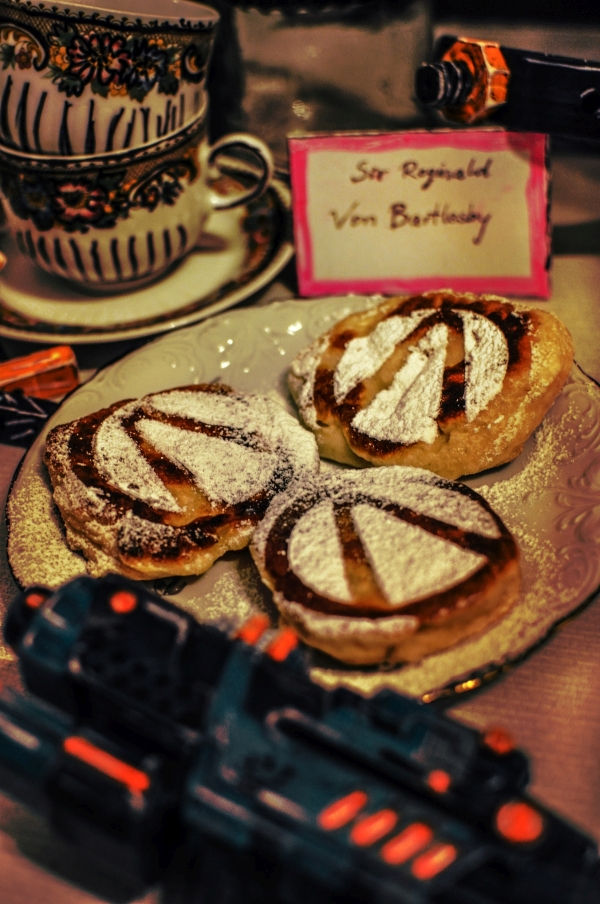

Tiny Tina's Crumpets

Yeast Fried Cakes
Well Vault Hunter, looks like you had a long day out murdering bandits and badasses, take a load off and join Tiny Tina for her tea party! She went all out this time and set up games and different snacks, don't worry she made sure this won't blow anyone up. She went ahead and made her famous crumpets also and she wanted to share with you on how she got them all finished up. So lets get this started!
Ingredients
Leaven
- 20g fresh yeast
- 1/4 cup of milk (your preference on fat, 2%)
- 2 tbsps all-purpose flour
- 1 tsp sugar
Dough
- 2 cups all -purpose flour
- 1 cup of milk (your preference on fat, 2%)
- 2 flat tbsps sugar
- 1 egg
- optional-natural vanilla aroma
Toffi Sauce
- 6 tbsps sugar
- 1 tbsp butter
- a pinch of salt
- 100 ml of 36% fat cream
For Frying
- rapeseed oil
- clarified butter
- a pinch of salt
Steps
- Put the yeast in a bowl, add a teaspoon of sugar, 1/4 cup of milk and mix until the yeast dissolves. Sdd 3 tablespoons of flour and mix until you get rid of the lumps, cover with a cloth or plate and leave in a warm place for about 15 minutes – the leaven should double its volume.
- Add the rest of the flour to the leaven, pour in lukewarm milk (lukewarm will speed up the whole process, but it must be really lukewarm and not hot because you will kill yeast), add sugar, a pinch of salt and 1 egg. Mix everything until a sticky and fairly thick mass is obtained. Cover the container with the dough with a cloth and leave to double the volume in a warm place – depending on the temperature in the room it will take about 30-50 min.
- In the meantime, prepare sauce (if you want, you can only eat with powdered sugar). Pour sugar into a saucepan – heat it over low heat, without mixing. When the sugar dissolves, gently shake the saucepan and control the color of the mixture – when it turns brown to gold, add warm cream. The caramel will get hard for a moment but then it will dissolve when heated. Mix and wait until the mixture has a uniform consistency similar to dissolved toffee. Remove from the burner, add butter, a pinch of salt and mix to combine. If you like a slightly denser suace, heat it for a while. If it thickens too much, you can add some milk.
- The dough that has doubled its volume should be mixed again before frying. Then warm up the oil in a frying pan, add 1 tablespoon of clarified butter and put the dough on a pan in portions – it’s quite difficult to get off the spoon, so it’s worth soaking it in water before each portion or helping yourself with a second spoon. Do not apply too much dough, because the pies will rise during frying. You can also use round molds to make the crumpets look nicer. Fry them on medium heat until golden brown on both sides (about 2-3 minutes on one), adding a little oil and butter in subsequent batches. When they are ready, put them on a paper towel to drain the fat.
- Serve hot with an additional potion of butter and powdered sugar.